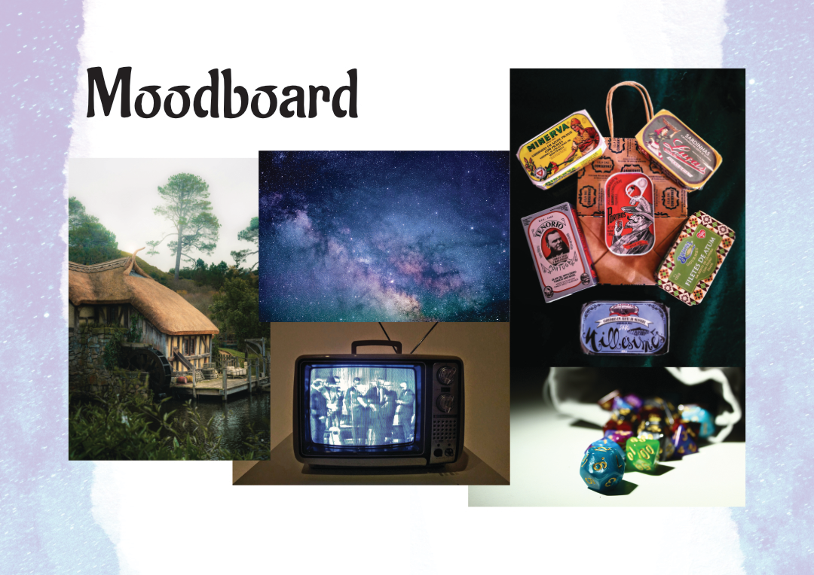
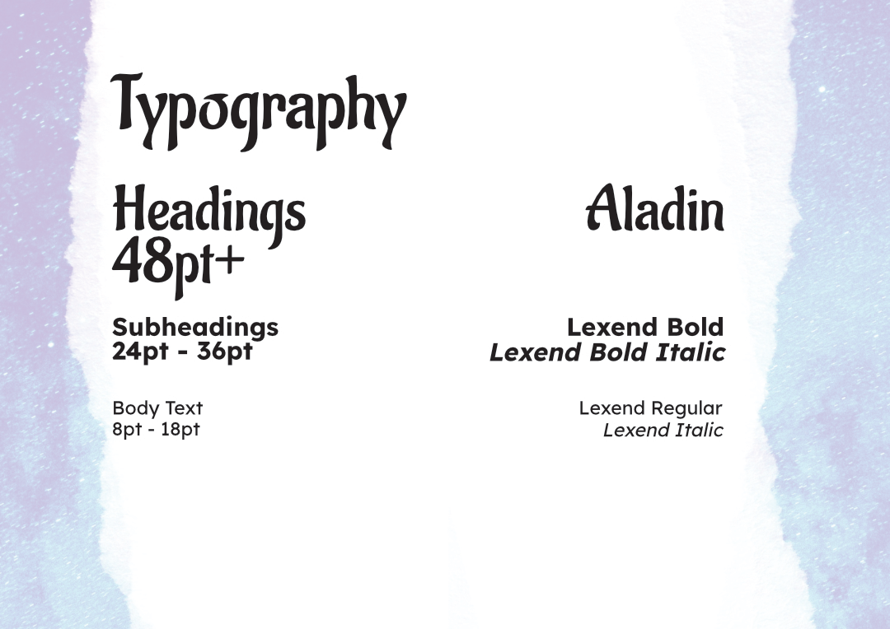
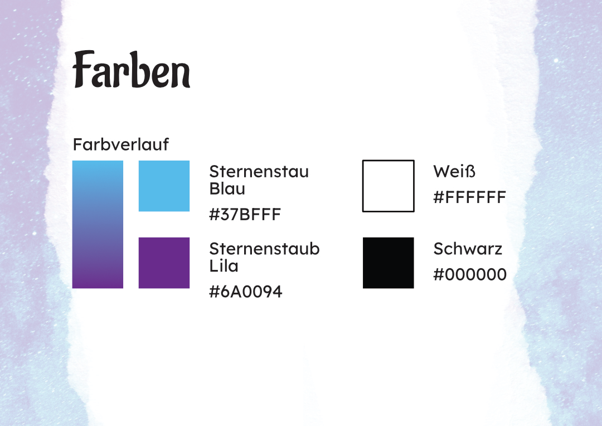

Project Overview
1 Monat / Branding und Print Design / Solo Projekt
5th Dimensional Tavern ist eine Rollenspielgruppe, die Inhalte rund um Tabletop-Rollenspielsysteme (TTRPG) erstellt, von Ergänzungen, die bestehende Systeme erweitern, bis hin zur Schaffung neuer Welten.
Development
5th Dimensional (Fünfte Dimensionale) hat eine Weltall Idee aber Tavern (Heuriger) gründet es in Fantasy.

Es gibt schon sehr viele Rollenspielgruppe im Netz oder auch IRL, jedoch fand ich nicht diese traditionelle Icons und Logos generisch.


Dann dazu kamm auch den anderen Aspekt von Moodboard: das Retro.

Dazu mit die Farben, hatte die Gruppe zusammen für eine Logo gewählt.
Corporate Identity and Style Guide



